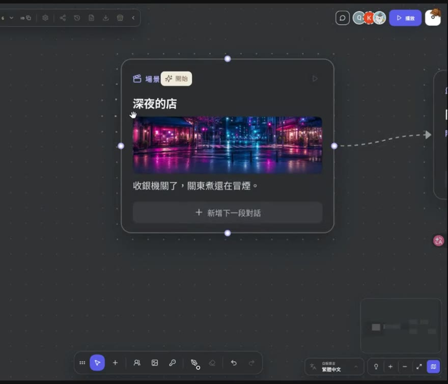
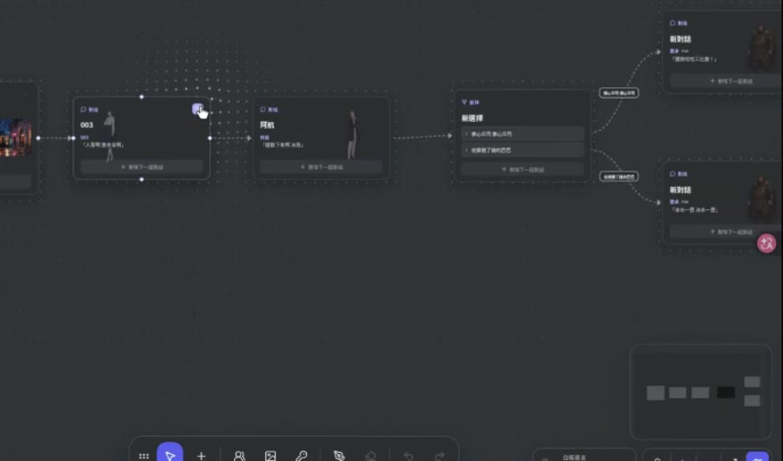
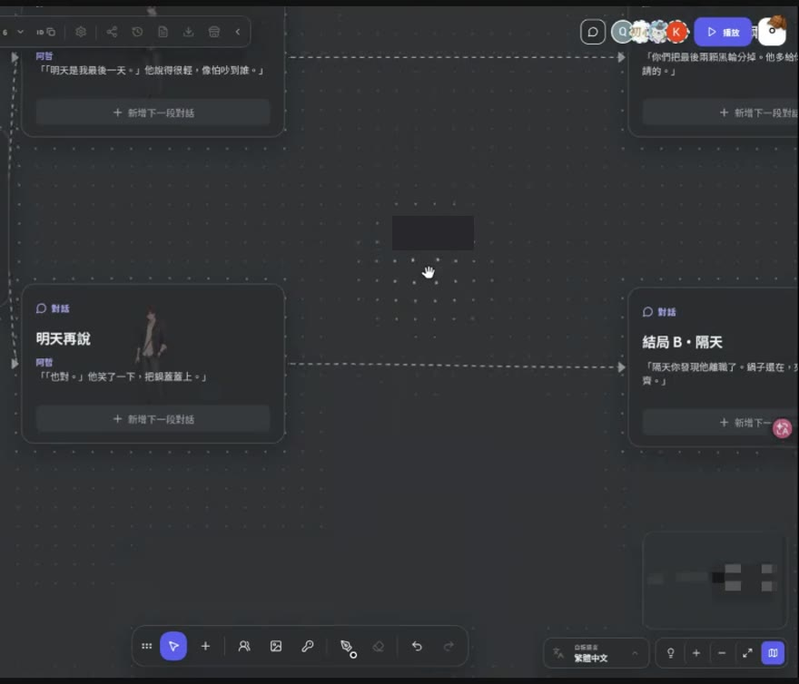
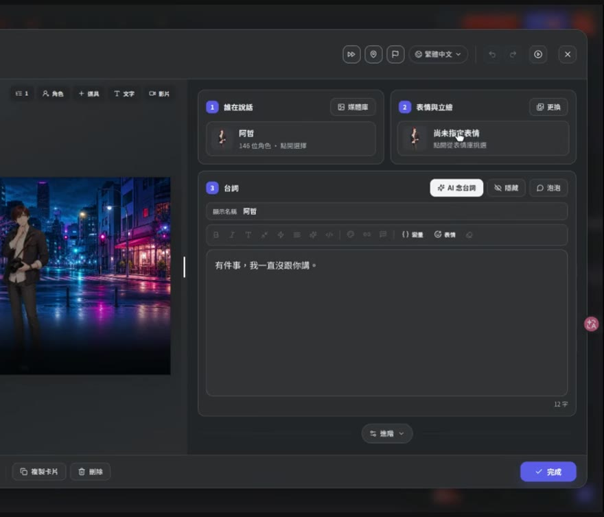
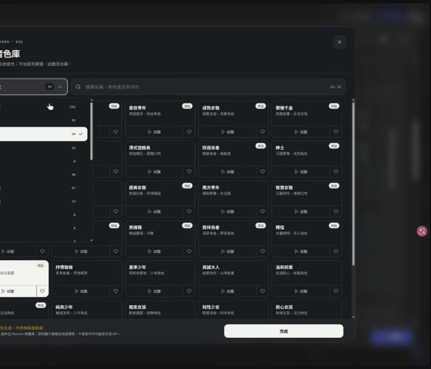
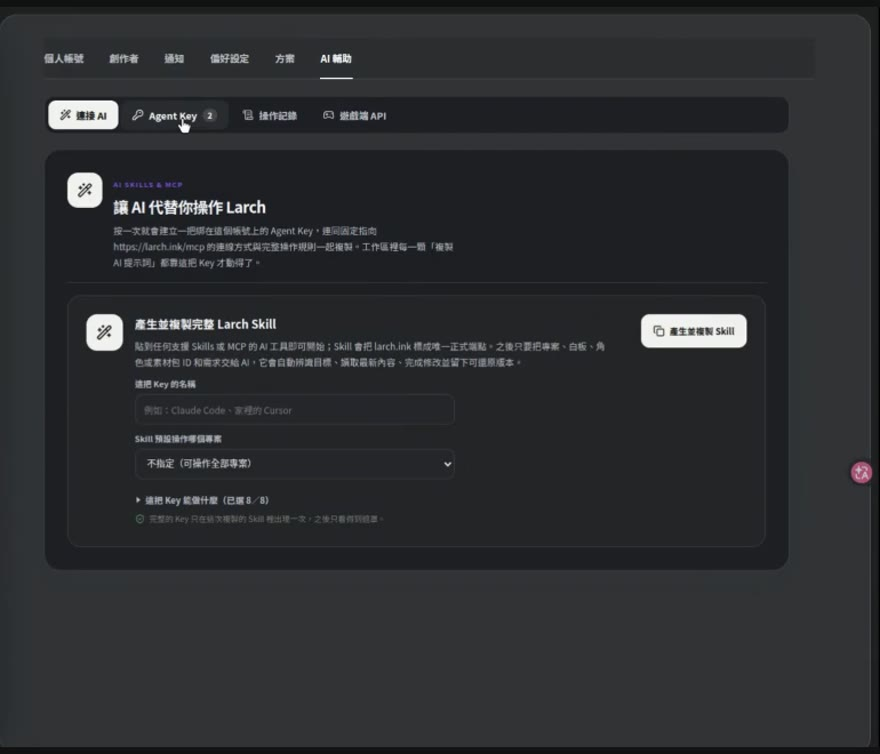
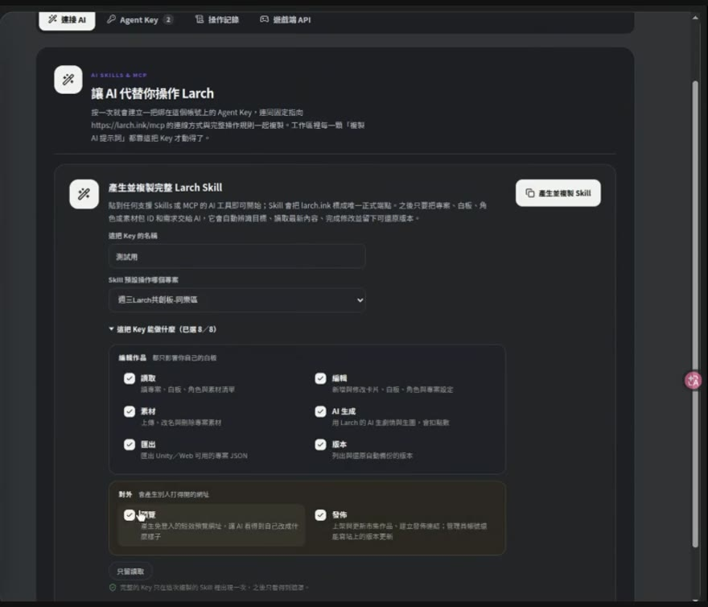

視覺小說第一週 2026-09-09
這份講義是給你回家自己做的。直播當晚我們花了很多時間在同一塊白板上一起玩，講述的部分因此講得比較零散。這份把它補齊，照著做，就算當天沒來也能從零做出一部能發佈的小說。
三層，由大到小：
| 層級 | 是什麼 | 比喻 |
|---|---|---|
| 專案 | 一部作品，也是素材、角色、設定的容器 | 一套書 |
| 章節（白板） | 一張畫布，上面放卡片與連線 | 一本 |
| 卡片 | 玩家實際看到的一個畫面 | 一頁 |
章節可以當「章」，也可以純粹當分類用。它們之間不會自動接下去：第一章演完不會自己跳到第二章，要在卡片上明確設定跳轉。
每個章節各自有一個「開始」起點。你可以把整個專案設計成一條連貫的長篇（只有一個真正的入口），也可以讓每一章都能獨立開始玩。兩種都行，差別在你要不要讓讀者從中間進來。
手動排卡也好、之後交給 AI 也好，想故事的順序都一樣。卡在「不知道從哪裡開始寫」的時候，照這四步走：
先有兩個結局：「兩個店員把最後兩支黑輪分掉，好好道別了」與「隔天才發現他已經走了，沒有好好道別」。
回推：那個選擇是「說吧」或「明天再說」。
再回推：需要兩個角色（你、同事阿哲）與一個場景（打烊前的店）。
故事就這樣寫出來了，總共六到八張卡，十五分鐘做得完。
核心只有三種，其他都是進階。在白板空白處點兩下就能加卡。
| 卡 | 做什麼 | 什麼時候用 |
|---|---|---|
| 場景卡 | 換背景 | 換地點、換時間。沒換場景就不用再放一張，背景會一直延續下去 |
| 對話卡 | 角色講話、配立繪與表情 | 用量最大的一種 |
| 選擇卡 | 跳出選項讓玩家選 | 分支的地方 |

第一次做的人幾乎都會漏掉這件事，做出來自己玩會覺得卡卡的。一張對話卡預設只有一句，但只要場景沒換，你可以在同一張卡裡一直「加一句」，而且每一句可以是不同的人講的。
兩個人鬥嘴十句，正確做法是一張卡裝十句。排成十張卡玩起來是一樣的，差別在白板：十張卡很快就把畫面佔滿，之後要找卡、接線、改東西都麻煩，一段長對話還會被拆散在好幾張卡上。同一個場景，一張對話卡就解決了。
場景 → 對話 → 對話 → 選擇 →（A 線）對話 → 結局 A ／（B 線）對話 → 結局 B。
選擇卡的選項可以放在畫面下方或中間。放下方比較像對話中的回應，放中間比較像真的要做一個決定。

| 動作 | 怎麼做 |
|---|---|
| 縮放 | Ctrl + 滑鼠滾輪 |
| 移動畫布 | 在空白處按住左鍵拖曳 |
| 加卡片 | 空白處點兩下，選場景／對話／選擇 |
| 編輯卡片 | 卡片上點兩下。左邊是預覽，右邊是設定 |
| 存檔 | Ctrl + S |
| 框選多張 | 按住 Shift 拉框 |
Ctrl+S 立刻就完成了。看到卡住不要一直等。

共創白板上大家改同一組卡片時，後存的會蓋掉先存的。當晚的解法是：框選你要練習的那一組卡 → 右鍵 → 原地複製一份，然後改你自己那份。想搬遠一點就剪下、貼到白板空的地方。
對話卡的設定由上到下就是四件事，記住順序就不會亂：

平台內建十四包素材，角色與場景都有，匯入不扣點數。專案的「素材」頁切到「素材包」就能匯入。第一部作品全部用現成的就夠了。
活動頁那四個練習小故事的背景與角色，我另外畫成了一包「四個練習小故事・素材包」，在市集「素材」區搜名稱就有（四張背景、八個角色，NPC 各三種表情，免費）。
真的找不到適合的角色，才去「角色工作坊」生一個。那會扣點數（第二屆挑戰賽期間報名後可無限使用）。

| 你想做的事 | 怎麼做 |
|---|---|
| 只看某一張卡的效果 | 那張卡按 Play，播完選「我看完了」回來改 |
| 從某一張往下走一整條線 | 那張卡按 Play，播完選「繼續往下播」 |
| 從頭玩整章 | 右上角的播放鈕。它會從你設定的開始那張卡起跑 |
設定起點：在卡片上按右鍵 → 設為開始。設好之後那張卡會出現一個小標籤。
每一條分支都要自己走一遍。選擇卡的兩邊各走一次，確認讀起來連貫、選項的字沒有誤導。這件事 AI 幫不了你：它可以把卡排好，但「讀起來順不順」只有人看得出來。
做到這裡你已經會手動排卡了。接下來這一步，是把「拉卡片、接線、打字」整包交出去，你只負責想劇情與驗收。


可以這樣起手：
用內建素材包開一個新專案：打烊前老闆娘問常客要不要換一種茶。一個場景、兩個角色、一個選擇、兩個結局，設好標題畫面，做完發佈，給我市集網址。所以：不要貼進公開的對話、不要傳到群組、不要 commit 進 repo、不要在螢幕分享時點開它。
以下都是我自己做這兩部作品時實際碰到的，時間是 2026 年 8 到 9 月。平台一直在改，有些可能已經修好了。列出來是為了萬一你遇到，才不會卡在那邊找不到原因。
| 症狀 | 真正的原因 |
|---|---|
| 改完了，市集上還是舊的 | 發佈是快照，要再發佈一次 |
| 角色一直站在畫面上不走 | 立繪不會自己清。在該退場的那張卡上明確清空舞台 |
| Agent 推上去的卡不見了 | 你的編輯器分頁開著，它會把白板打回它記得的版本。叫 Agent 動手前先關掉分頁，或要求它動手前先讀一次最新狀態 |
| 存檔卡在「儲存中」 | 再按一次 Ctrl+S |
| 按右鍵設不了起點 | 那張卡本來就已經是起點了。卡片上有小標籤的就是 |
| 多人一起改，改的東西被蓋掉 | 框選那組卡右鍵原地複製一份，改自己那份 |
白板有一個「AI 模式」，開了之後 AI 會把版子上所有卡片當素材，照你寫的提示詞即興演一齣。當晚我們全場一起丟卡片然後跑了兩次，沒有預期中那麼好玩。以下是當時哪幾件事沒做到，你自己要用的時候可以先避開。
當時的提示詞是「用白板上的卡片隨意推演劇情，每個卡片的人物都要出現到，大家一起出來開同樂會吧」。播出來的東西比較散：角色輪流亂入，沒有一條主線串著。
Larch 官方（Yayapipi Studio）在 2026-08-16 辦過一場《製作視覺小說讀書會》，72 分鐘，內容跟這場互補，講了很多我們當晚沒講到的事。
那場講的是第一屆創作者挑戰，我們現在參加的是第二屆，所以裡面的比賽規則、主題與截止日都已經不適用了，看的時候跳過那部分。平台操作的部分照樣有效，而且有幾項是我們當晚完全沒碰到的。
以下是重點與時間位置，細節請直接看原片。
原片：youtube.com/live/Cia-1hENf3s（音量偏小，記得調大）
| 時間 | 講了什麼 |
|---|---|
| 12:30 | 官方 Wiki 的位置：有問題先查那裡 |
| 14:00 | 一個角色掛多種表情的做法 |
| 18:20 | 讓玩家輸入名字，之後劇情裡叫他的名字 |
| 31:20 | 用變數記住玩家選過哪一條線 |
| 34:30 | Claude Code 沒有生圖能力，Codex 有（挑 Agent 前要知道） |
| 39:20 | 上傳圖片的版權界線 |
| 41:00 | 平台去背的實際效果與限制 |
| 47:30 | 把作品匯出成獨立遊戲 |
| 53:40 | 匯出的東西可以接進 Unity |
| 55:10 | 上傳作品的解析度規格 |
| 59:50 | 下載成 EXE 檔 |
| 64:30 | 同一句話生成不同語氣 |
| 69:30 | AI Credit 到底花在哪些動作上 |
每一個都是一個場景、兩個角色、一個選擇、兩個結局，六到八張卡，十五分鐘做得完。背景全部用內建素材，不用生圖。
| 練習 | 故事 | 背景 |
|---|---|---|
| 一、關東煮前面 | 收銀機關了，同事阿哲說「有件事我一直沒跟你講」。選「說吧」或「明天再說」 | 霓虹夜城 |
| 二、茶館的最後一杯 | 常客每天點同一杯，今天老闆娘問「今天想換一種嗎」 | 星軌街屋・雨後夜巷 |
| 三、診療所的號碼牌 | 診所要關了，最後一號還沒叫到。選「明天再來」或「我可以等」 | 雨後急診走廊 |
| 四、霧港的信 | 一封寫錯地址的信，管理員問「要拆嗎」 | 霧港渡輪總站・藍時 |
完整的故事內容在活動頁。不想用內建素材的話，這四個故事的背景與角色我另外畫成一包「四個練習小故事・素材包」，市集「素材」區搜名稱就有，免費。做完一個，你就有一個免登入可以分享的網址了。